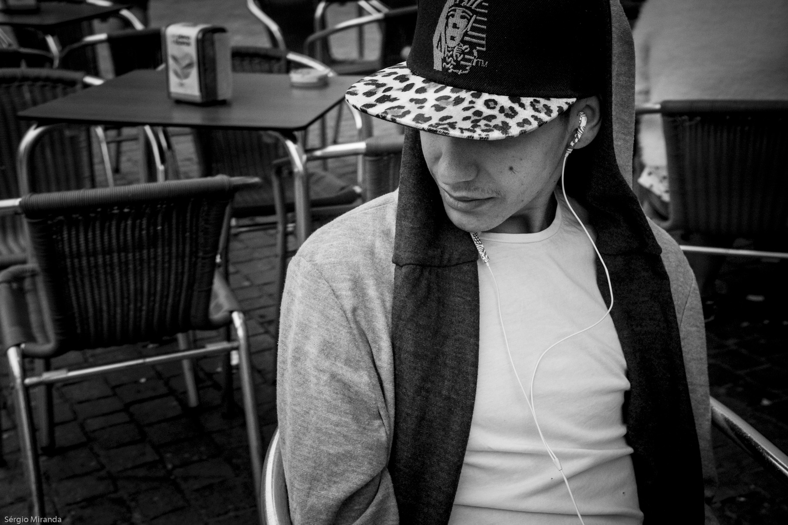
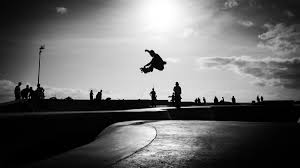
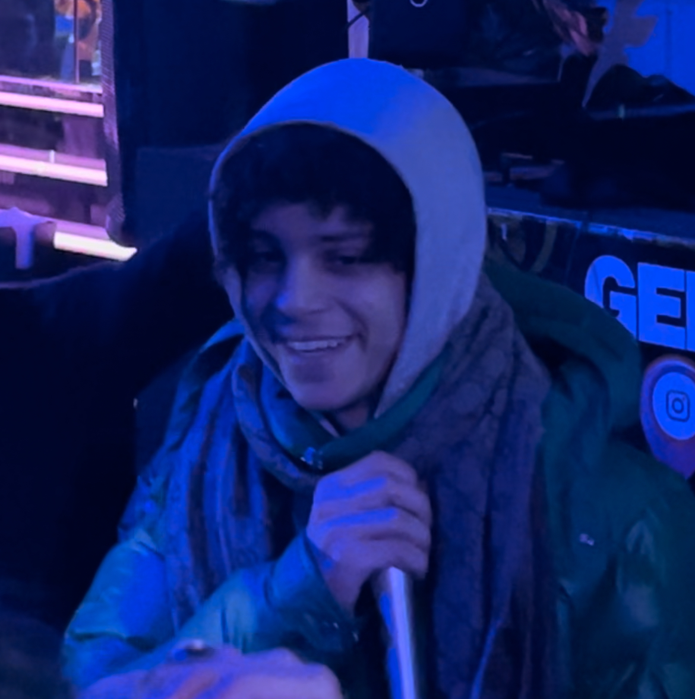

This page follows jerk music from its early 2000s roots to its revival in today's hip hop and trap scenes.
Early 2000s — The Roots
Regional origin: Jerk began in Los Angeles, especially among young Black and Latino communities in California. It was as much about street dance battles and skate crews as it was about the music.
Sound: Early beats were stripped down with heavy 808s, crisp claps, and repetitive synth melodies perfect for dancing.
Dance element: Moves like the Reject and Pin Drop spread through dance crews, making the "jerkin" dance inseparable from the sound.
Breakout song: New Boyz released "You're a Jerk" in 2009, pushing the scene into national awareness.
"You're a Jerk" took the scene from local crews to national fame.
Mid 2000s – 2010s — The Style Explosion
Fashion: Skinny jeans, bright colors, snapbacks, Vans, and colorful sneakers defined the jerk aesthetic, turning it into a lifestyle brand.
Social media and YouTube: Platforms like YouTube and MySpace were crucial. Dance crews posted battles online, songs spread virally, and local jerk groups built followings.
Local scenes: California parties, street gatherings, high schools, and skate parks kept jerk culture thriving.

Bold fashion statements made jerk culture instantly recognizable.
2010s — Underground Survival and Influence
Mainstream decline: After the hype of "You're a Jerk," the sound disappeared from mainstream radio, but it never died.
Underground evolution: Artists and producers in LA and online kept making jerk beats, blending them with trap, drill, and experimental rap.
Internet microgenres: Online collectives such as Nova Gang and 1c34 revived jerk sounds in underground internet rap circles.

Skate parks and DIY venues kept the scene alive when mainstream attention faded.
2020s — Revival and Internet Era Growth
Resurgence of sound: Jerk beats resurfaced in underground hip hop as young artists mixed nostalgia with modern production.
Key artists and producers: Figures like Xaviersobased, Fakemink, Yhapojj, Nettspend, Subiibabii, and Duwap Kaine - paired with producers Kashpaint, Chaosysl, Cru, 444jet, Bbuggin, and DJ Ess - shape today's wave.
Jerknb and hybrids: Substyles such as jerknb (jerk plus R&B) blend bouncy beats with melodic vocals for new directions.
Internet culture: TikTok, SoundCloud, and other platforms spread jerk tracks globally, echoing YouTube's role during the 2000s.
Global reach: Jerk is no longer strictly Californian - UK and international artists are experimenting with the sound.
Cultural continuity: Dance crews, skaters, and underground fans keep jerk tied to its roots while evolving it for a digital generation.

New-school performers bring jerk energy to streaming audiences worldwide.